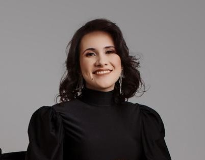

Bruna Riguetto do Nascimento Vasconcelos | WDD 130
I am a current BYU-Pathway Worldwide student studying Software Development, with a Bachelor's degree in Business Administration and a strong passion for cultural exchange and global collaboration. Having lived in Italy for several years, volunteered for 18 months in England, and being born and currently based in Brazil, I’ve had the privilege of working and connecting with people from all over the world. These experiences have shaped my ability to adapt, communicate, and thrive in diverse environments. My professional background is rooted in sales—both in-person and remote - serving clients in the U.S. and Italy. Over the years, I’ve developed a broad knowledge of CRM systems and a customer-first approach that I bring into every project. I’m now seeking an entry-level position in software development where I can continue to grow, learn from experienced mentors, and contribute meaningfully to a team. I am particularly interested in remote opportunities that allow me to collaborate across cultures and time zones - something I truly enjoy and excel at.